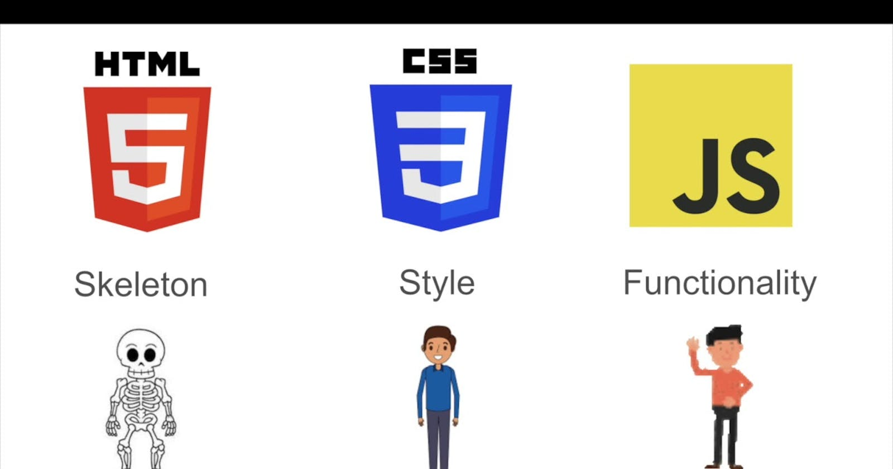

I can still recall the exact moment when my curiosity for the web turned into a passion. Like many people, I spent countless hours online, moving from one website to the next—reading articles, checking out social media, watching videos, and diving into a variety of content. But one day, something shifted. I began wondering, "How are these websites built?" It was a simple question, but it opened up a whole new world to me. Websites weren’t just random pages floating on the internet—they were created, designed, and coded by someone. That realization was all it took to spark my interest. From then on, I was hooked on figuring out how websites actually work.
Falling in Love with Web Development
For me, falling in love with web development wasn’t an instant thing; it was a slow burn. At first, I was just curious—how could a few lines of code create something that millions of people use daily? I had no idea how websites were structured, what kind of code was behind them, or even how the internet functioned on a technical level. But the more I explored, the more I realized how powerful and creative web development could be.
Every day, I’d interact with the web, navigating through different pages, clicking links, filling out forms. At first, I took all of this for granted—assuming it just worked like magic. But once I started learning, I saw that behind every link, image, and button was a carefully crafted set of instructions. Developers were shaping the very experience I was having online. That idea fascinated me, and I knew I wanted to be part of it. Web development offered the perfect blend of creativity and logic, design and problem-solving. It wasn’t just about writing code—it was about creating something functional and beautiful from scratch. I realized this was the field I wanted to immerse myself in.
Understanding the Web
Before I get into the technical side of things, let’s take a step back and talk about what the web actually is. We all use it every day, hopping from one website to another. But have you ever stopped to think about how it all works? For me, the moment I understood the fundamentals of how the web operates was a game changer.
When we visit a website, we’re not just magically seeing a page appear. What’s really happening is that our browser (like Chrome or Firefox) is sending a request to a server, asking for a specific page. The server then responds by sending back files, usually written in HTML, CSS, and JavaScript. These files tell our browser what the page should look like and how it should behave. That’s the part that blew my mind—every single element you see on a webpage, from the text to the images to the buttons, is all created using code. And that code isn’t just thrown together randomly; it’s structured in a way that makes everything work seamlessly together.
On the web, there are two main parts to a website: the front-end and the back-end. The front-end is everything the user sees and interacts with—the layout, the design, the buttons, the text. This is built using HTML, CSS, and JavaScript. HTML is like the skeleton—it provides the structure of the page. CSS is like the skin—it adds colors, fonts, and spacing to make the page visually appealing. JavaScript, on the other hand, is like the brain—it adds interactivity, making buttons clickable and forms functional. Together, these three languages create the experience you have when browsing a website.
The back-end, though, is what most users don’t see. It’s where the server lives, and it’s responsible for handling data and making sure everything runs smoothly behind the scenes. While I haven’t fully dived into the back-end yet, I’m eager to explore this world too because I want to become a full-stack developer—someone who can handle both front-end and back-end development
The Car Metaphor for HTML, CSS, and JavaScript

Take a moment to imagine that building a website is like building a car. Every part of the car has its own specific function, just like each of these three core technologies has its role in creating a webpage.
HTML (HyperText Markup Language) is like the chassis of the car—the core structure that holds everything together. Without the chassis, the car can’t take shape or be functional because it lacks a frame. Similarly, HTML provides the skeleton of a webpage. It defines the essential elements: text, headings, images, buttons, and the structure that the rest of the webpage will sit on. For example, if you wanted to create a contact form or a header, HTML would define where those elements go and what type of content they contain. In this car metaphor, HTML is everything from the frame, the wheels, to the windows—the basic structure you build upon.
CSS (Cascading Style Sheets) is the paint job and interior design of the car. It’s how the car looks from the outside and feels on the inside. Once HTML has laid down the structure, CSS steps in to add the visual appeal—colors, fonts, spacing, and overall design. It’s the artistic side of web development, which brings creativity into play. CSS is what makes a website attractive to users, just as a sleek paint job and comfortable seats make a car visually appealing and enjoyable to ride in. Without CSS, web pages would be just plain text on a white background—functional, but not engaging.
JavaScript is the engine of the car, the part that gives it life and allows it to move. Without an engine, the car can’t run; it’s just a static object. JavaScript adds interactivity and behavior to a webpage. It powers the dynamic aspects, allowing users to interact with the site in meaningful ways—clicking buttons, submitting forms, creating animations, or loading new content without refreshing the page. In the same way that the engine responds to your inputs (stepping on the gas or turning the wheel), JavaScript reacts to user actions, driving the interaction between the user and the webpage.
Understanding this car metaphor made it easier for me to see how these technologies come together to create something functional, interactive, and visually appealing.
How HTML, CSS, and JavaScript Collaborate
Now let’s take a step further with this second visual, which breaks down the roles of HTML, CSS, and JavaScript a little differently:
HTML is shown as the skeleton. This makes sense because, just like a skeleton holds up a human body, HTML provides the basic structure that everything else builds on. Without bones, our body would be formless and non-functional. HTML does the same for a webpage. For instance, it tells the browser, “Here’s where the title goes, here’s where the image appears,” but it doesn’t concern itself with how those elements will look or behave. It’s all about the layout and structure.
CSS is depicted as the style or appearance. Just like the clothes we wear or the color of our skin adds to our visual identity, CSS defines the styling of the website. It determines how the HTML elements should be presented—whether a button should be blue or red, how large or small the text should appear, and how sections should be spaced out. It’s about giving the bare structure (HTML) a sense of personality and making it engaging for users to look at.
JavaScript is represented as functionality, or what makes the website “come alive.” It’s like how muscles and brain signals allow us to move and interact with the world. JavaScript adds behavior to a website, enabling users to click, scroll, and input data. For example, when you fill out a form and get a thank-you message without the page refreshing, that’s JavaScript at work. Without JavaScript, websites would be static, with no way for users to interact beyond reading text or looking at images.
These three components—HTML, CSS, and JavaScript—work together just like the bones, skin, and muscles of a human body, or the frame, design, and engine of a car. Separately, they’re limited, but when combined, they create the rich, interactive experiences we enjoy on the web every day.
Learning HTML, CSS, and JavaScript as an Autodidact
When I first started learning, I didn’t take the traditional route. I didn’t sign up for any formal courses or earn certifications. Instead, I took a self-taught approach. I remember opening my browser and typing, “How to build a website,” and from there, I dove into an endless sea of tutorials, videos, and blog posts. I taught myself the basics of HTML, CSS, and JavaScript. At the time, I didn’t realize how vast the world of web development was, but I enjoyed every bit of learning something new.
I started with HTML, creating basic web pages with headings, paragraphs, and images. Then I moved on to CSS, experimenting with colors, fonts, and layouts to make my pages look more visually appealing. Finally, I dabbled in JavaScript, adding some interactivity like clickable buttons and forms. It was a lot of trial and error, but I loved every moment of it.
However, looking back, I can see one big mistake I made: I didn’t document my journey. At the time, I didn’t think it was necessary, but now I understand how valuable it would’ve been to track my progress. Without documentation, I couldn’t clearly see how far I had come, and I had nothing to show for my hard work other than a few scattered files. I also didn’t seek out certifications or official proof of my skills, which made it harder for me to validate what I knew. In hindsight, that was a missed opportunity to build a solid foundation for my future in web development.
Why I’m Starting Over (and Doing it Right This Time)
Now, I’m ready to start fresh with a better plan. One of the main reasons I’m writing this blog is to make sure I document my journey this time around. I want to keep track of everything I learn, from the challenges I face to the victories I achieve. This blog will serve as my learning log—a place where I can reflect on my progress and share my experiences with others who might be on a similar path.
I also want to be more structured in my approach. While self-learning was a great way to explore and get my hands dirty, I’ve realized the value of formal education and certifications. That’s why, in addition to teaching myself, I’m enrolling in courses and aiming to earn certifications to back up my skills. My goal is to create a balanced approach, where I can combine the freedom of self-learning with the credibility of formal training.
Ultimately, my goal is to become a full-stack developer because it combines the best of both worlds. On the front-end, I get to express my creativity through design, crafting beautiful and intuitive user experiences. I love using my designer's eye to make websites not only functional but also visually appealing. But the back-end excites me just as much—it's where the logical problem-solving happens, where the real challenges lie. I want to master both sides, blending creativity with technical complexity, to build seamless, fully functioning web experiences. It’s a journey that pushes me creatively and intellectually, and I’m ready for every step.